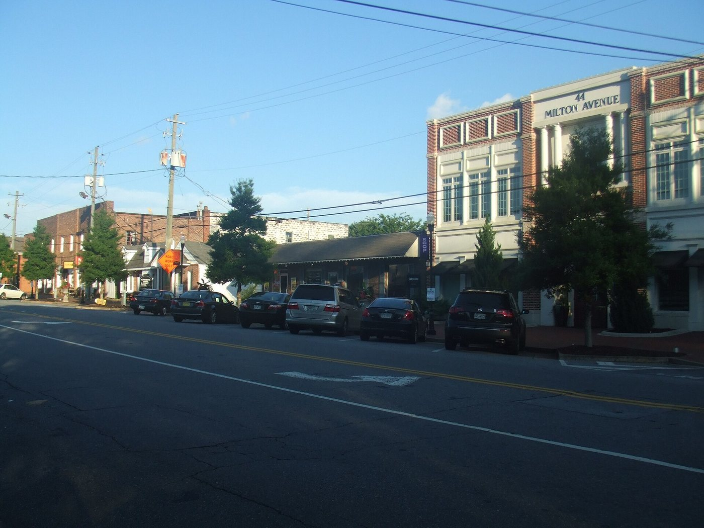
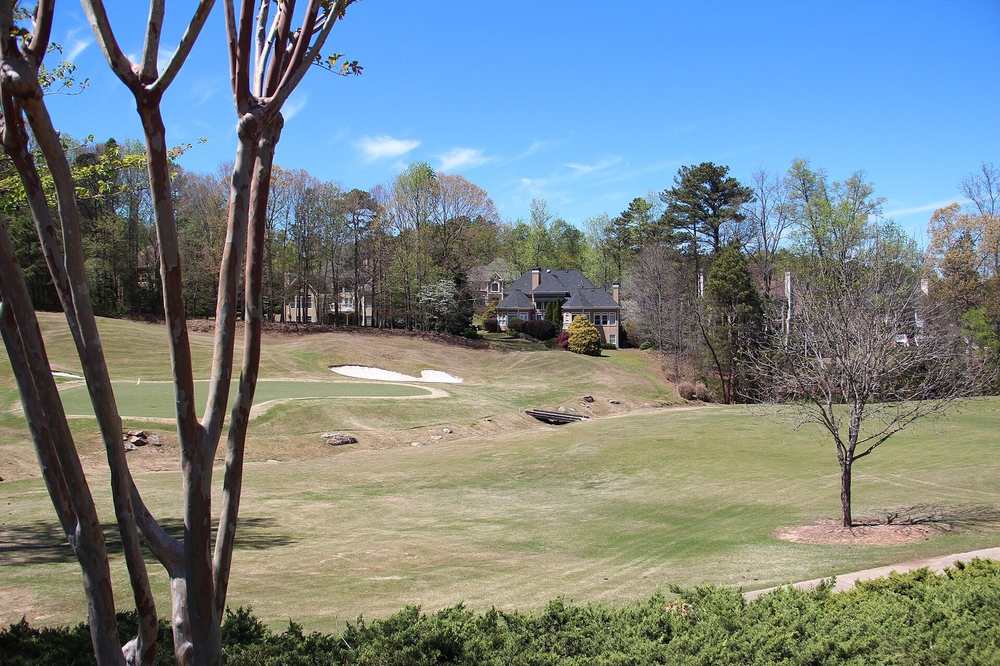
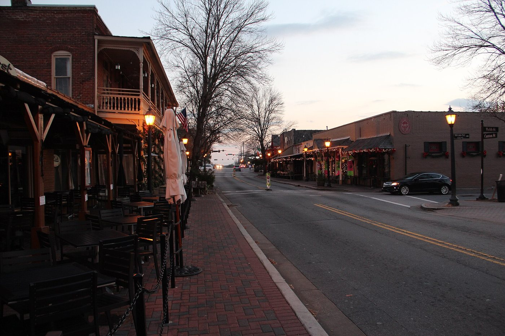

01

Fulton County · Georgia
Live Alpharetta listings, saved searches by kind of home, and what to know about the former Milton County seat.
Living in Alpharetta
Alpharetta is a city in north Fulton County, about 26 miles north of downtown Atlanta.
It was the town of Milton until July 1858, was chartered as Alpharetta on December 11, 1858, and was the county seat of Milton County until that county merged into Fulton County in 1932. Its Downtown surrounds City Hall and Alpharetta City Center, and the Big Creek Greenway and Alpha Loop trails run through the city.
Living in Alpharetta: Downtown, Avalon and the suburbsJohns Creek, Alpharetta or Cumming?

At a glance
36mi
Hartsfield-Jackson Airport
26mi
Downtown Atlanta
9mi
Johns Creek
Driving miles from Alpharetta City Hall by OpenStreetMap routing, October 2026. Time on the road depends on traffic.
Downtown Alpharetta and Alpharetta City Center
Downtown centers on Main, Canton and Roswell streets, Milton Avenue and Park Plaza, around City Hall and Alpharetta City Center.
Brooke Street Park & Arboretum
Park on the back side of City Hall with an arboretum, a winding path, a stream, a covered bandstand, public sculptures and a reflection garden.
Municipal park on Old Milton Parkway at Wills Road with ball fields, tennis courts, a pool, the Wills Park Equestrian Center, a disc golf course.
Network of 12-foot-wide multi-use trails linking four of the city's activity centers, including Downtown and the North Point area.
Search Alpharetta
Start with one of these searches, or browse the newest Alpharetta listings below. Every listing comes from the MLS through IDX Broker, updated as it changes.
01

02

03

04
Newest first

$1,349,000
1015 Wills Mill Lane Alpharetta, GA 30009
5 beds · 4.5 baths · 4,620 sq ft
Listed by CENTURY 21 Results

$789,000
430 Mayfield Glen Way Alpharetta, GA 30009
4 beds · 3.5 baths · 3,180 sq ft
Listed by CENTURY 21 Results

$1,085,000
3205 Brookhaven Bend Alpharetta, GA 30022
5 beds · 4 baths · 4,050 sq ft
Listed by CENTURY 21 Results

$649,900
215 Haynes Creek Court Alpharetta, GA 30005
4 beds · 3 baths · 2,860 sq ft
Listed by CENTURY 21 Results
Selling in Alpharetta? Get an instant home value, or read Sarah's guide to pricing an Alpharetta home.
Alpharetta traces its history to the 1830s and was the seat of Milton County from 1858 to 1932. The Alpharetta and Old Milton County History Museum at 2 Park Plaza covers that history, and admission is free. Alpharetta City Center, in Downtown, holds City Hall, a Fulton County Library branch, apartments, offices, retail space and green space.
Behind City Hall, Brooke Street Park has an arboretum, a winding path, a stream, public sculptures, a covered bandstand and a reflection garden, and the Town Green next to City Hall has a fountain. The Alpha Loop, a network of 12-foot-wide multi-use trails, connects Downtown with other activity centers in the city.
Wills Park, on Old Milton Parkway at Wills Road, has ball fields, tennis courts, a pool, the Wills Park Equestrian Center, a disc golf course, a community garden and the Alpharetta Arboretum at Wills Park, established in 2008. Mansell House and Gardens, a 1912 Queen Anne style home on Old Milton Parkway, is the home of the local historical society.
Webb Bridge Park & Arboretum has sports fields, a lake and walking trails. The Big Creek Greenway is a paved path along Big Creek that runs from Windward Parkway south toward Mansell Road, with access at Haynes Bridge Park, Rock Mill Park, Northpoint Park, Marconi Park, Union Hill Park and other city parks.
A few questions are worth settling before you write an offer on a Alpharetta home.
Day to day
School information is factual and by district. Always confirm a specific address in the district's school finder.
Questions
Fulton County, in the north part of the county. The city borders unincorporated Forsyth County to the northeast, and the Halcyon development has an Alpharetta postal address but is in Forsyth County outside the city limits.
Fulton County Schools.
Yes. Downtown Alpharetta centers on Alpharetta City Center, which includes City Hall and a Fulton County Library branch, with Brooke Street Park, the Town Green and the Alpha Loop trail nearby.
About 36 miles. Downtown Alpharetta is about 26 miles north of downtown Atlanta.
Resources
Nearby

Explore

Explore

Explore
Let's Talk
Tell Sarah what you are looking for in Alpharetta, and she will set up a search or walk you through a neighborhood.